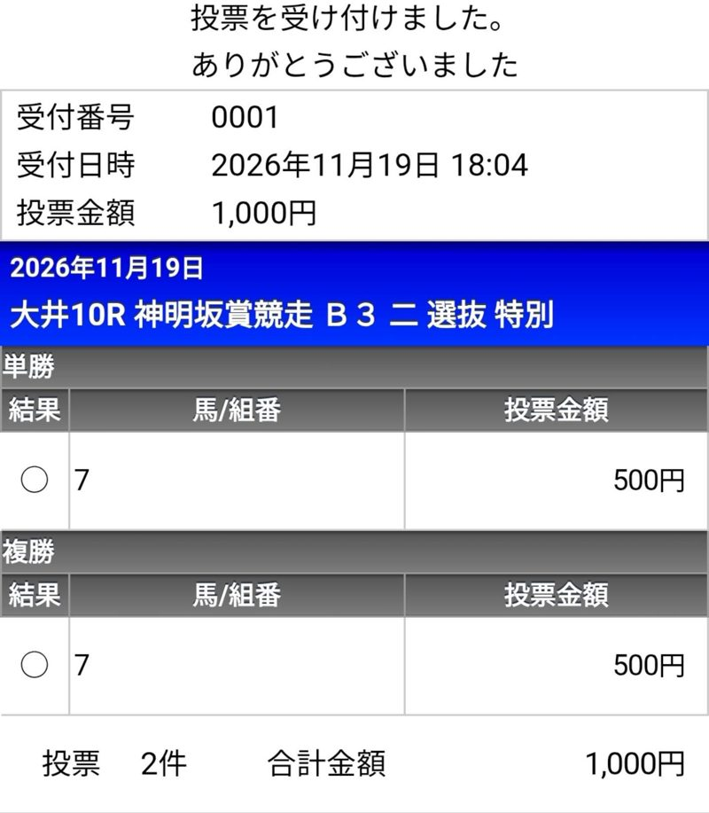

前日成績
11/18 大井10R ノベンバー賞 ◎1 マスターオブライフは1着でした。逃げ切り勝ちで単勝650円・複勝500円、1,000円→1,150円です。
前日のその他の予想の結果（予想だけ・買っていません）
大井11R ハイセイコー記念 ◎1 ケテンパッションは1着でした（仮想払戻1,700円）。大井12R 猫又坂賞 ◎3 サイカンサンユウは3着でした（仮想払戻550円）。
予想だけの累計：2レース・的中2レース 仮想購入2,000円→仮想払戻2,250円 仮想回収率112.5%（本年成績には含みません）
当日予想
2026/11/19(木) 大井10R 神明坂賞（B3二選抜特別）
19:30発走、ダート1600m、馬場は重です。
◎7 ニジコ 野畑凌
７ 単勝 ５００円
７ 複勝 ５００円
門別ではブリーダーズゴールドカップ（JpnIII）で7着、牝馬オープンで3着・4着と、重賞やオープン級で好走してきました。今回はB3への降級で、相手関係はぐっと楽になります。大井は初めてで移籍初戦のため人気は5番人気にとどまっていますが、実力はこのメンバーで上位です。1600mへの距離短縮もプラスに働きそうです。

＜本年成績＞
中央 213戦26勝 291,400円→181,380円 -110,020円 62%
地方 12戦4勝 12,000円→14,750円 +2,750円 123%
払戻"金"投資 108,020円→95,625円 -12,395円 -11.47%
その他の予想（予想だけ・買っていません）
大井9R 18:55発走、ダート1200m
◎8 イマーシブ 和田譲 単勝 ５００円／複勝 ５００円（仮想）
大井1200mで4勝の実績があります。前走8着は減量見習騎手の騎乗が敗因で、今回は実績のある和田譲騎手に鞍上が戻ります。
大井11R ローズベール賞（準重賞）20:10発走、ダート1600m
◎3 ジュンウィンダム 安藤洋一 単勝 ５００円／複勝 ５００円（仮想）
今年4月にJRA京都のダート1200mオープンで勝利した実績は、地方の準重賞では格上です。1600mは未経験で移籍初戦のため、人気は3番人気にとどまっています。